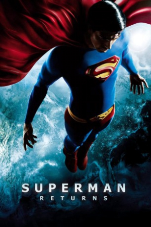

Country:United States, 154 minutes
Spoken languages:English, French, German
Genres:Sci-Fi, Action, Adventure
Director(s):Bryan Singer
Writer(s):Michael Dougherty, Dan Harris
Video Codec:Unknown
Number: 2340


Certification:
Storyline:
Superman returns to discover his 5-year absence has allowed Lex Luthor to walk free, and that those he was closest to felt abandoned and have moved on. Luthor plots his ultimate revenge that could see millions killed and change the face of the planet forever, as well as ridding himself of the Man of Steel.
Cast:

Medium: Original DVD,
Loaned: No
Aspect ratio: Unknown